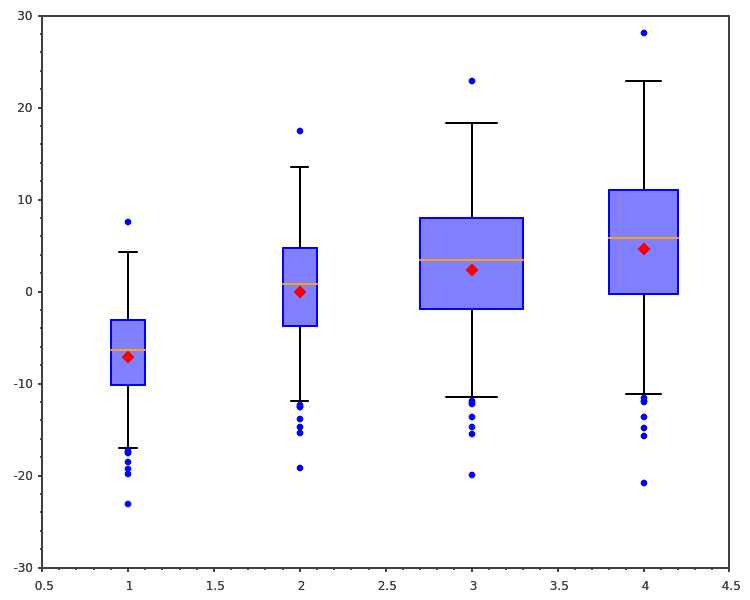
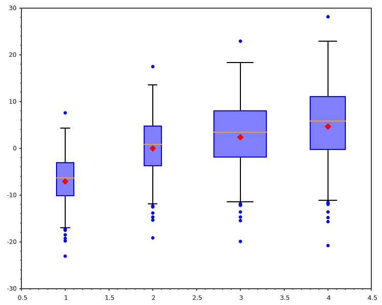

SciCpp’s documentation¶
SciCpp is a data and signal processing C++ library.
SciCpp objective is to follow the SciPy API while using standard C++
containers (std::array and std::vector) whenever possible.
SciCpp is a lightweight header only library. Its only dependence is the Eigen linear algebra library, which is also header only.
SciCpp uses the C++-17 standard. It is tested with the GCC and Clang compilers under Linux.
SciCpp is released under the MIT licence and sources are available on Github.
Introduction¶
SciPy is an amazing library that facilitates developments. Often SciPy is used for prototyping but algorithms must be re-implemented in a system language for production. This is especially the case for embedded systems, where the CPU and/or memory resources may be too limited for the Python runtime.
SciCpp ambitions to facilitate the transition from SciPy to C++ implementation. Therefore, SciCpp goal is to mimic the SciPy API in terms of functions naming and behavior, to avoid surprises in the transition process.
Plots¶
Even though Scicpp is not a plotting library, some plotting functions are implemented based on the Sciplot library.
Those are not only useful for development and debugging but are also great examples of Scicpp library capabilities.
 

{kind=link}
{kind=link}
{kind=link}
{kind=link}